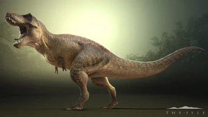
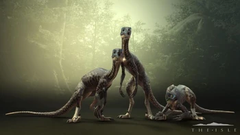
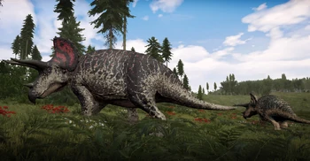

A large apex predator of Late Cretaceous North America, the Tyrannosaurus rex was the largest known member of the tyrannosaurids, weighing 8 tons, standing 4 meters tall, and measuring 13 meters in length. It hunted down a variety of large herbivores such as Edmontosaurus, Triceratops - all thanks to its crushing bite; estimated at 35,000 to 57,000 N (7,868 to 12,814 lbf) of force in the back teeth, which makes Tyrannosaurus rex have the most powerful bite of...ver mas

Troodon is a dubious genus of small feathered birdlike dinosaurs that existed during the Cretaceous period 86.3 million years ago - 66 million years ago in North America that hunted small mammals, insects and baby or small dinosaurs. Around 2017 ''due to its'' dubious validity scientists came to the conclusion that Troodon has probably never existed and the findings of its genus were redistributed onto the ones of Latenivenatrix...ver mas

Triceratops was one of the last ceratopsians, and at maximum size, it was 29 feet (9 meters) long, 9.8 feet (3 meters) tall and 6 tones in weight. The horns above their eyes were each 1 meter (3.3 feet) in length. The frill was relatively short and lacked any fenestrae, though some specimens have occipital's lining the frill's edge. Triceratops likely lived in small family groups, and fed on ferns, palms, and cycads. They walked with the elbows bowed out, like...ver mas